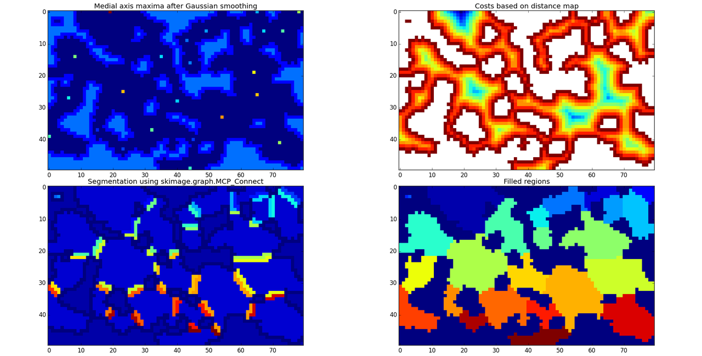
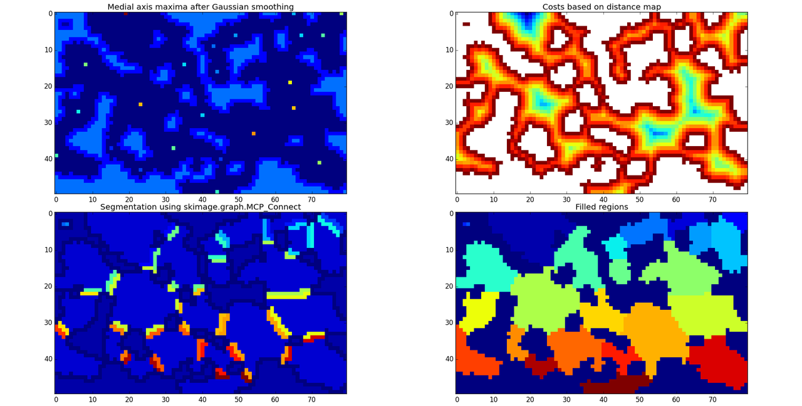

I just spent nearly two days researching spatial indexing/partitioning.
I'm trying to figure out what kind of structure I need to represent my
game world.
Initially, I was trying to find a way to identify contiguous regions in
my generated map. I wanted to select isolated rooms (some can be seen in
the previous screenshot) so I could try to do something with them. Maybe
run a tunneling algorithm to connect them up to the rest of the map, or
just convert them into something decorative like pools of water. Started
looking at running flood fills and counting cells but quickly abandoned
that. I don't want to try to manually implement flood fill in Python,
given that I'm already seeing a small slowdown in generating this tiny
map. I wanted a more efficient option, and eventually got to numpy and
scipy. These two libraries allow fast processing of multi-dimensional
arrays, and these scipy
functions
(particularly label) look like exactly the kind of thing I need. It took
me some time to understand how it works, and now I've got a pending task
to refit my map representation to use numpy arrays.
With this, I started considering the possibility of treating the tilemap
as essentially a 2D image. Each tile is pretty much just a pixel, so
that should allow you to use all sorts of 2D graphics techniques to
process a map. You could split a map into multiple layers, create masks,
and treat them like sprites, blitting subregions onto a background.
Something like that might be a way to support construction and terrain
deformation in the game. What could be done with filters, shaders, and
other such methods? I don't know much about those, so they're another
subject to research later.
From there I went to 2D collision techniques, looking at ways to quickly
find intersections among intervals and points. I found references to
R-trees, kd-trees, quadtrees, segment trees, and interval and range
trees. After many hours I've understood pretty much nothing of the
technical aspects of how they work, but the latter three look like
useful constructs. I found this series of
articles
which led to this Javascript
library that
implements streaming segment trees. At least 10 hours yesterday were
spent attempting to port this library to Python, both because I wanted
to experiment and because I was hoping to learn about the algorithm and
the techniques used to make it efficient. I only got partway through
before hitting a major roadblock, in that the library seems to make
heavy use of some kind of run-time code generation which I have no idea
how to translate.
Nobody seems to have written Python code that provides mutable 2D
spatial trees. The best I can find seem to be the 1D intervaltree
package and the
insert-only pyqtree quad
tree. Maybe that'll be enough. In the end, though, all of that is
completely irrelevant to the roguelike. Consensus is that uniform
grids and spatial
hashing
are generally sufficient for box intersection in a game. Constructing
and maintaining a tree is only worthwhile in cases where you have
objects of widely varying dimensions or if they're sparsely distributed.
Still, this may be useful for a later project.
There's another significant challenge pending, namely making the map
generation deterministic so that I can save its state. Even if I save
the terrain layout of the map, I'm going to be using random minor
variations in color and characters to texture the terrain. Modifying the
terrain during gameplay will throw this off completely and result in
blatant changes in appearance. I want to keep the terrain layout and
appearance separate. That is, I just want to record that a cell contains
grass; I don't want to store which of the 8 possible variations of grass
tile the game displayed for that particular cell. And I just realized
that I should be using a hash function here instead of an RNG. That'll
fix the problem, assuming the function provides good distribution of
values. Maybe save a random seed/salt value for each map, and then use a
hash to combine that with each tile's position and terrain type to
choose a variant.
...and now I've spent some hours reading about Bloom filters, cuckoo
hashing, key derivation functions, etc., while looking for a suitable
Python hash function. Interesting post
here
(links to a Youtube playlist with videos).
The step after this is going to be wilderness generation. I'll pause
work on dungeon generation because I need to figure out map
representation for towns and overworld terrain. I'm thinking that I'd
like to have some z-level variation in surface maps, and I have an idea
of how to visualize it, but that's something that needs to be
prototyped. Giving it the right visual presentation will mean more
trial-and-error color work, and I'll probably have to try out stuff like
alpha blending and color interpolation.
 
